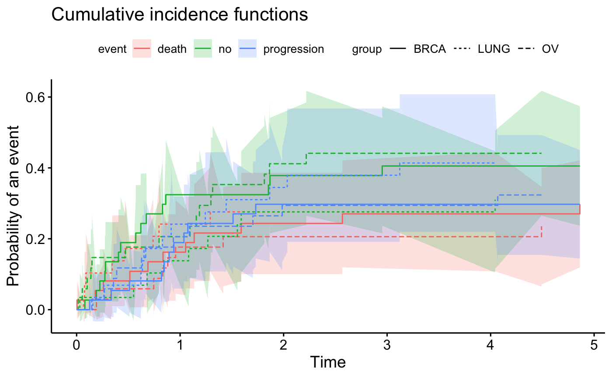
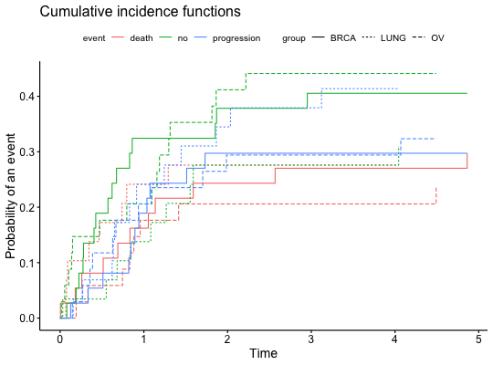
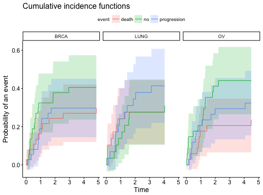
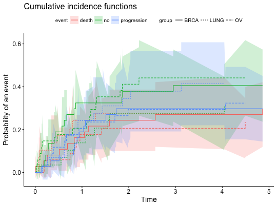
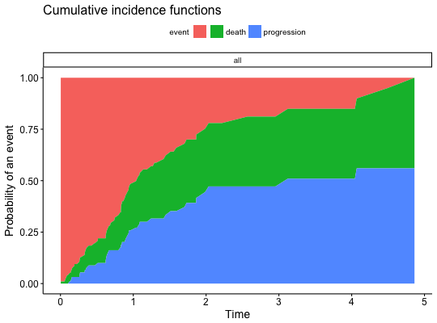
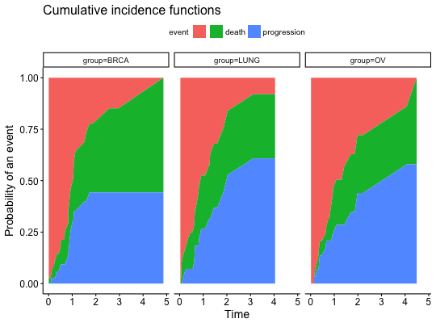

This function plots Cumulative Incidence Curves. For cuminc objects it's a ggplot2 version of plot.cuminc.
For survfitms objects a different geometry is used, as suggested by @teigentler.
ggcompetingrisks(fit, gnames = NULL, gsep = " ", multiple_panels = TRUE, ggtheme = theme_survminer(), coef = 1.96, conf.int = FALSE, ...)
survfitms created with survfit function.fit object (cuminc only).gnames object (cuminc only).TRUE then groups will be plotted in different panels (cuminc only).ggplot2 theme name. Default value is theme_survminer.
Allowed values include ggplot2 official themes: see theme.conf.int, scaling actor for the ribbon. The default value is 1.96.TRUE then additional layer (geom_ribbon) is added around the point estimate. The ribon is plotted with boundries +- coef*standard deviation.ggpar for customizing the plot.Returns an object of class gg.
set.seed(2) ss <- rexp(100) gg <- factor(sample(1:3,100,replace=TRUE),1:3,c('BRCA','LUNG','OV')) cc <- factor(sample(0:2,100,replace=TRUE),0:2,c('no event', 'death', 'progression')) strt <- sample(1:2,100,replace=TRUE) # handles cuminc objects print(fit <- cmprsk::cuminc(ss,cc,gg,strt))#> Tests: #> stat pv df #> no event 2.1489630 0.3414748 2 #> death 0.2490482 0.8829170 2 #> progression 0.5518865 0.7588560 2 #> Estimates and Variances: #> $est #> 1 2 3 4 #> BRCA no event 0.3243243 0.3783784 0.4054054 0.4054054 #> LUNG no event 0.1379310 0.2758621 0.2758621 0.2758621 #> OV no event 0.2058824 0.4117647 0.4411765 0.4411765 #> BRCA death 0.1621622 0.2432432 0.2702703 0.2702703 #> LUNG death 0.2413793 0.2758621 0.2758621 0.2758621 #> OV death 0.1764706 0.2058824 0.2058824 0.2058824 #> BRCA progression 0.1891892 0.2972973 0.2972973 0.2972973 #> LUNG progression 0.2413793 0.3448276 0.3793103 0.4137931 #> OV progression 0.2058824 0.2941176 0.2941176 0.2941176 #> #> $var #> 1 2 3 4 #> BRCA no event 0.006188145 0.006901417 0.007391345 0.007391345 #> LUNG no event 0.004340703 0.007643672 0.007643672 0.007643672 #> OV no event 0.004994699 0.007767270 0.008089927 0.008089927 #> BRCA death 0.003828336 0.005337151 0.005930541 0.005930541 #> LUNG death 0.006637210 0.007337434 0.007337434 0.007337434 #> OV death 0.004504398 0.005133510 0.005133510 0.005133510 #> BRCA progression 0.004378377 0.006110680 0.006110680 0.006110680 #> LUNG progression 0.006700958 0.008631668 0.009219678 0.009771658 #> OV progression 0.005033271 0.006681731 0.006681731 0.006681731 #>ggcompetingrisks(fit)ggcompetingrisks(fit, multiple_panels = FALSE)ggcompetingrisks(fit, conf.int = TRUE)ggcompetingrisks(fit, multiple_panels = FALSE, conf.int = TRUE)# handles survfitms objects library(survival) df <- data.frame(time = ss, group = gg, status = cc, strt) fit2 <- survfit(Surv(time, status, type="mstate") ~ 1, data=df) ggcompetingrisks(fit2)fit3 <- survfit(Surv(time, status, type="mstate") ~ group, data=df) ggcompetingrisks(fit3)## Not run: ------------------------------------ # library(ggsci) # library(cowplot) # ggcompetingrisks(fit3) + theme_cowplot() + scale_fill_jco() ## ---------------------------------------------